01ENCUESTA
¿Qué tan confiable soy?
9.4/10Formato APA
casi certificado
casi certificado
1 = Fuente: de los deseos / 10 = Formato APA
Desliza para actualizar el resultado local.
Pero eso ya lo sabes. Aunque tal vez más de eso no.
Te prometo que sí soy un buen tipo por muy dudoso que se vea esto.
Pero no me creas a mí: créele a los números.
*No se garantiza objetividad en la muestra.Hice una breve encuesta entre mis amigos. Los resultados, completamente científicos* (más o menos), fueron estos.
1 = Fuente: de los deseos / 10 = Formato APA
1 = NPC / 10 = Clave como el Perú
1 = Meh / 10 = T-I-P-A-Z-O
1 = Explicarte con chubis / 10 = Einstein 2
Los datos iniciales se conservan en el cálculo. Las distribuciones se aproximaron a partir del PDF y tu evaluación solo modifica tu vista.
Bueno, como muestran los números, podemos concluir que no soy tan mal tipo. Algo raro sí, sin embargo, bien nomás.
Mi nombre ya lo sabes. Te cuento un poco sobre mi recorrido y las cosas que he ido aprendiendo, con sus altos y bajos.
¿Hay algo más que explicar dentro de esa línea? Claro que sí. Puedes preguntármelo.
Esto ya parecía una entrevista de trabajo. Mejor te comparto algunas de las cosas que me gustan. A lo mejor tenemos algo en común.
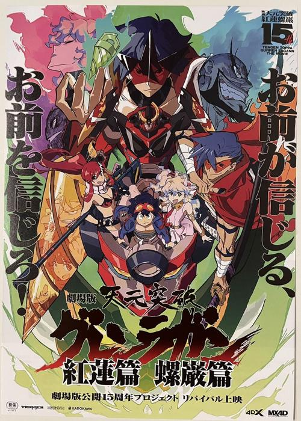
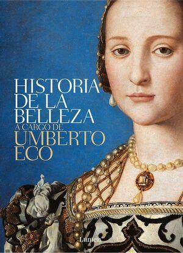
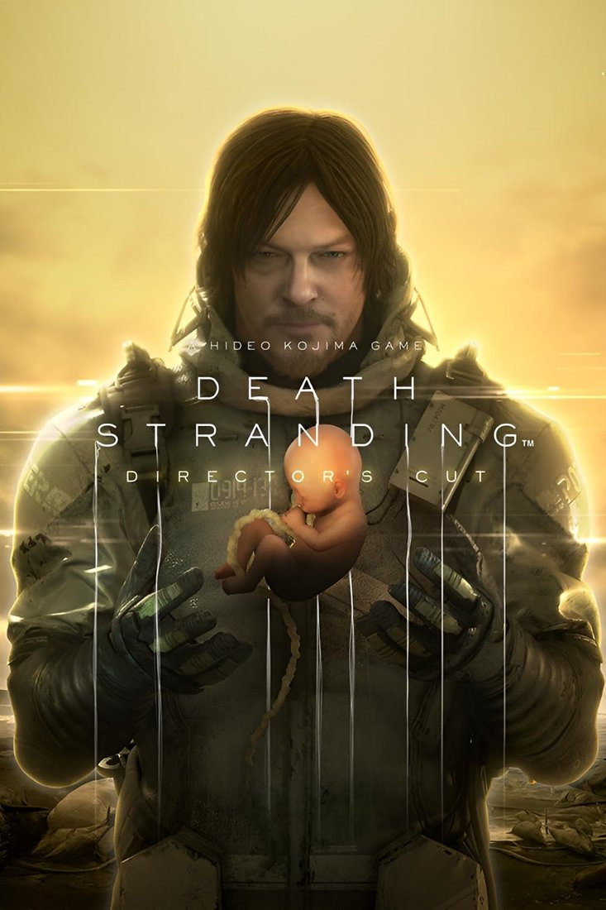
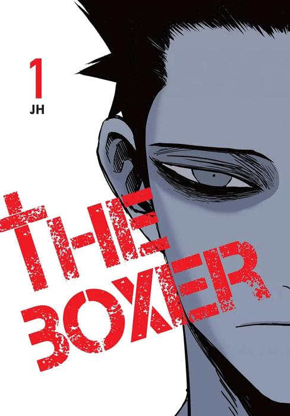
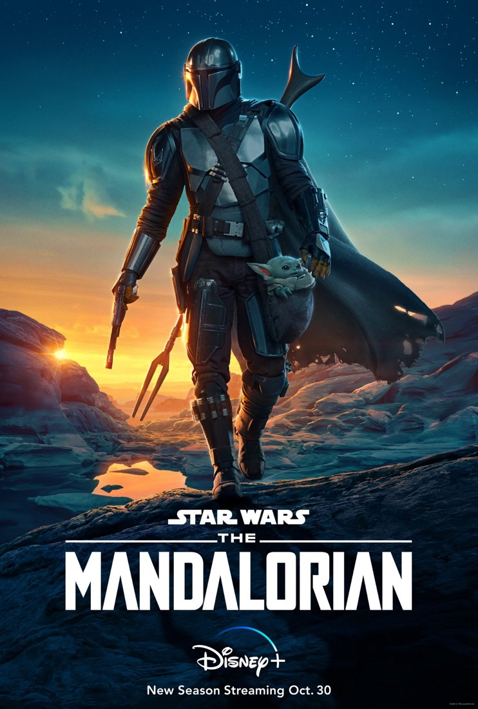
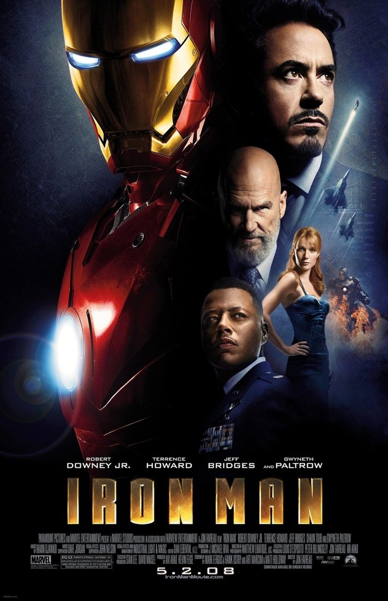
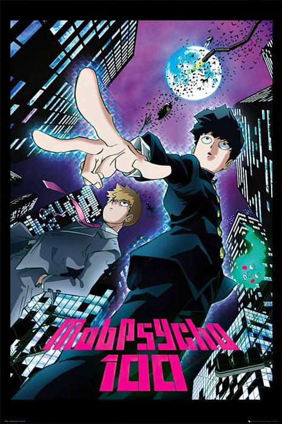
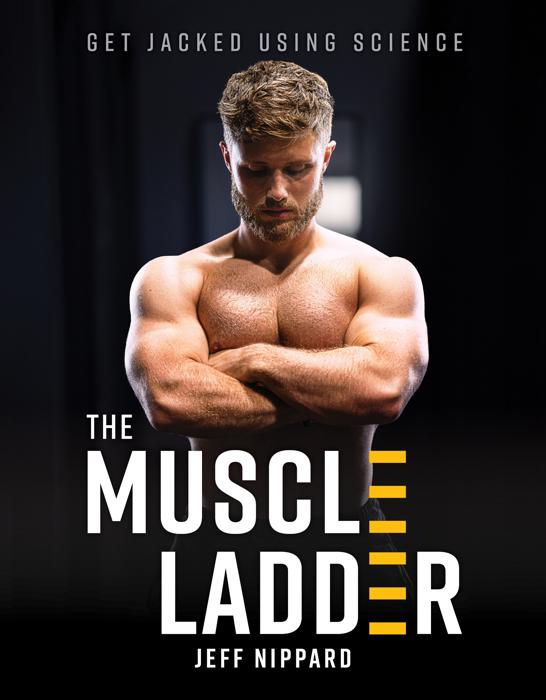
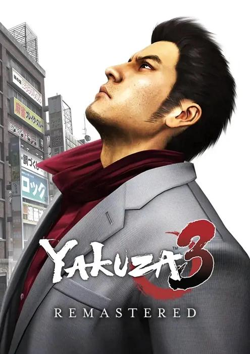
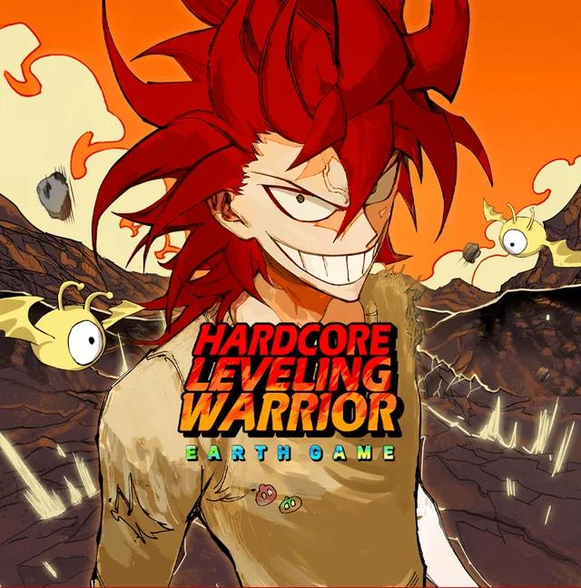
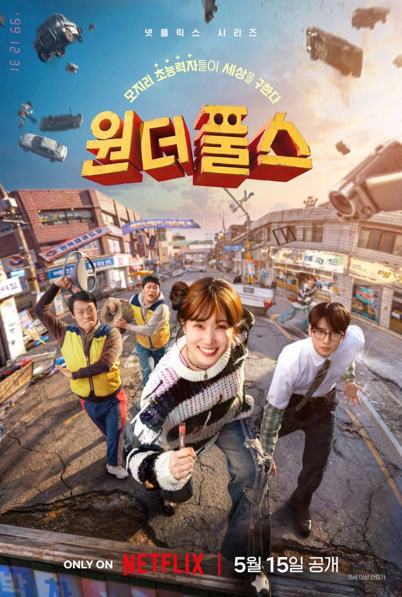
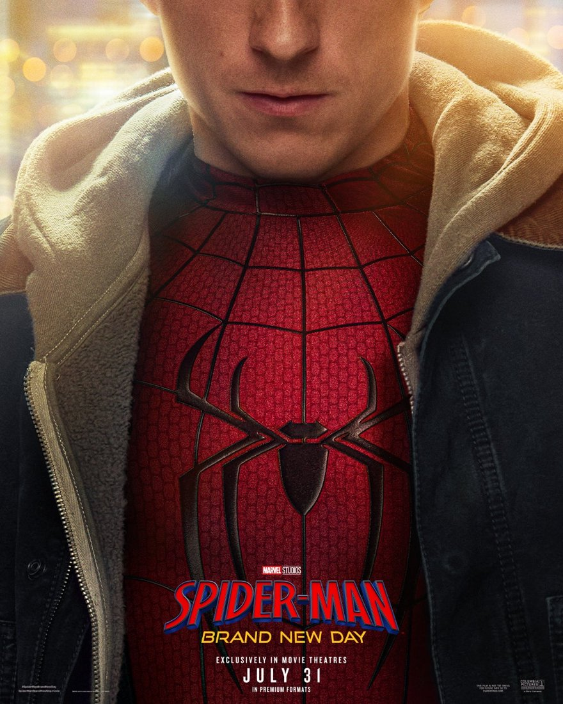
Portadas originales seleccionadas para esta presentación personal.
Acá tenés un par de misiones secundarias en lasa que ando trabajando, a lo mejor compartimos algún hobby
▥ 10 segmentos = 100 %. Cada torre muestra una estimación personal basada en la presentación original.
Diría que escucho de todo. Pero no todo de todo. Pero sí algo de todo. Con una preferencia por los boleros. Te comparto mi playlist.
Escuchar mi playlistTodo lo que probablemente no necesitabas saber, pero igual te voy a contar.
Sí, sí me da bastante. No sé qué me pasó al hacer esto. Pero me parece que uno tiene que adaptarse o morir, además me divertí mucho haciendo esto hahahh.
Salado. Me empalaga lo dulce, así que no podría comerlo todo el tiempo.
Antes era team frio, pero ahora soy más de team caliente, pero aprecio las ventajas de ambos
Me gustan todos los colores, pero azul, celeste, turquesa, morado, verdes y naranjas.
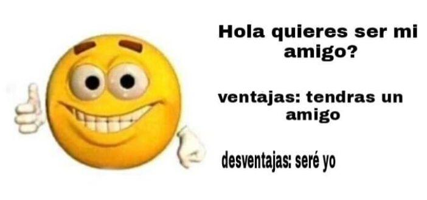
Ambas respuestas abren WhatsApp con el mensaje «Sí, seamos amikos».